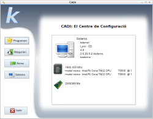
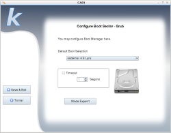
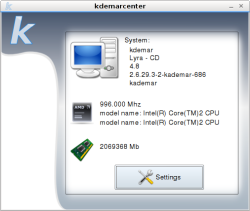
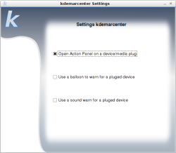
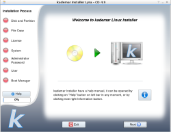

kademar 4.9 - Notas de la Versión
Basada en Debian Lenny
Después de no estár 100% de acuerdo de la política que Debian está siguiendo para su versión Squeeze, kademar se ha basado en Debian Lenny, hasta que decidamos cual será el futuro de kademar.
CADI

- Módulo de GRUB en instalado añadido
- Configuracion de Internet en threads (no bloquea)
- Ocultar el paso de pedir IP por defecto
- Optimizar la configuración de internet
- Optimizar el fichero de configuración de internet
- Parámetros de inicio concretos
kademarcenter

- Apartado de configuración - tema de computación invasiva (bug id 1)
- Iniciar el módulo de CADI de ineternet (eth y wifi)
- Montaje de los dispositivos desde donde arrancas
Instalador

Nueva versión del instalador, con muchas mejoras, y preparación a lo que deberá llevar
- Posibilidad de hacer una instalación 100% libre
- Corregido: a veces no contaba el progreso
- Mejorado el Instalador (opción sin Grub - comentado en foro)
- Soporte a particiones no formateadas (bug id 2)
- Interfaz rediseñada completamente.
- GUI entera en inglés y traducida:
fbsplash, el substituto de splashy
Después de haber tenido problemas con splashy, hemos optado por un mejor arranque gráfico. Ahora hay más compatibilidad con los ordenadores.
NTFS Autofix
Cuando usamos otros sistemas operativos que usan el sistema de archivos NTFS y se cierran mal, la partición queda corrupta y no se puede escribir en ella.
Ahora se arreglan automáticamente, para que se puedan escribir, sólo arrancando kademar y usándola normalmente.
Y Más...
- Audioconversor
- Si seleccionas no crear carpeta, vuelve atrás
- Mejoras que han recibido todos los programas de kademar
- Cambiados los fondos
- Programas a 800x600
- Adecuado al nuevo logo de kademar
- Nucleo 2.6.30 - Con mucho más soporte a dispositivos de todo tipo
- Configuración de idioma de IceWeasel
- Configure /etc/apt/pinning - Varias versiones sin problemas
- Mejorada la intgración de openoffice con kde
- Borrado de carpetas temporales residuales
- Versión de grub anterior, más compatibilidad
- Desactivado soporte ext4, temporalmente
kademar 4.8 - Notas de la Versión
kademarcenter
Esta versión incorpora kademarcenter, la otra gran estrella de kademar.
kademarcenter sale en respuesta a una necesidad inherente a Linux y a las personas. La necesidad de facilitar a lo máximo la experiencia del usuario en su sistema kademar Linux. Es la necesidad de poder tener un centro, donde todo está integrado y los dispositivos se manejan unificados.
- Detección de dispositivos
- Escojer qué acción hacer
- Montaje por Label
- UsbTray integrado
- Gestión automática de medios
- Substituto de IvMan
- Nuevos frentes abiertos
- Programado en Python QT4
- kademarstart integrado
- Mejorada desactivación
- Soporte a standalone también
CADI 5
En esta versión, se renueva el CADI: El asistente de configuración.
Aprovechando para añadir algunas funcionalidades y depurar el código
- Renovación total a QT4
- Traducion 100%
- Módulo de configuración a internet - Completamente rescrito
- Añadido panel de diagnóstico
- Configuración junta de Wifi y Ethernet
- Uso de Hal
- Módulo Ndiswrapper - Para dispositivos wifi no reconocidos en linux
- Módulo de Pantallas
- Configuración de resolución
- Soporte a cambio instantáneo de resolución
- Añadido soporte a resoluciones KDE
- Soporte a Xorg.conf sin resoluciones
- Tamaño de letra
- Profundidad de color
Instalador:
Como siempre, hemos perfeccionado las utilidades de kademar, para aprovechar las nuevas tecnologías y acercarlas al usuario final
- Uso de EXT 4 por defecto
- Información a través de HAL
- Grub con UUID
- Mejoradas las traducciones
- Optimizada creación de usuario
- Bandera catalana más bonita
- Retoques gráficos
- Recuperada creación de Skel para nuevos usuarios
AudioConversor 5 (4.8)
Como todas los programas de kademar, y éste no es una excepción, llega un punto en que la nueva tecnología se impone y se debe reescribir a la antigua.
- Extracción directa de archivos de Video a Música
- Soporte de encode a MP3, OGG y Wav
- Soporte de decode a mp3, ogg, wma, wav, flv, mid, midi, pcm, umx, kar, spc, psf, ra, ape, flac, mpc, flc, avi, mkv
- Soporte Drag'n'Drop de archivos y carpetas
- Encode en threads - Se puede ver el progreso
- Conversión a una carpeta
- Soporte completo a acentos/símbolos raros en nombres de archivos
- Selección múltiple de ficheros en la lista
- Los directorios recursivos, se añaden las canciones separadas
- Mejorado soporte a formatos
- Programado en Python QT4
Soporte a escritura en Live-USB
Guarda tus documentos junto a tu distribución favorita en tu pendrive.
Almacena tus preferencias y lleva contigo tu ordenador personal con todo lo que necesites.
Y si no quieres guardar los cambios, también puedes hacerlo, arrancando en Live-USB
Mejora de tiempos de Arranque y Apagada
Se han mejorado substancialmente el tiempo de arranque en modo instalada, así como también en modo live-cd.
Se ha optimizado el código interno de los scripts de arranque.
KDE 3.5.10
Se ha actualizada a la última versión del entorno de KDE
Y mucho más
Kernel 2.6.28.7
- Desactivada extensión PAE (fallaba en algunos ordenadores)
- Mejorado sistema de módulos
- Carga más rápida
- Squashfs 3.4 + lzma
- Nvidia 180.22
- Compcache 0.5
- CDFS
- Hybrid (broadcom)
- Linux STA (New driver)
- ACX100
- AuFS
- Ndiswrapper
Nuevo aspecto - basado en "OpenSuSE Wallpapers"
Soporte inicial a servidor de paquetes de kademar
Corregido problema de arranque lento de Grub
Soporte a pantallas panorámicas
Uso de la configuración gráfica de live-cd en instalada
Optimizado arranque en instalada
Copias de seguridad de openoffice activadas por defecto
Corregido problemas con flash/iceweasel
Mejorada lectura de CDRom (audio/data)
gparted 4.3 (con soporte a EXT4)
Iceweasel/Firefox 3.0.6
Pidgin 2.5.4
Smplayer 0.6.6 - con soporte a descarga de subtítulos
Uso de los paquetes del servidor de kademar
Más Debian que nunca
Wine 1.1.16
Librerías gtk 1.x Obsoletas
Mejorado soporte a teclados en terminal
Fondos de pantalla dinámicos de todo (normal/panorámicos)
Optimizados scripts internos
Mejorada lista de unidades del Pc
IvMan borrado - Un paso importante hacia kademar 5.0
Inicio de Live-CD/USB Traducido
Restaurado soporte a CDFS (Extracción de un CD de áudio arrastrando los archivos a la carpeta deseada)
Aumentado tamaño de archivos para previsualizar - konqueror
Cambiada configuración - se puede aumentar los iconos en konqueror
Soporte a módulos de X cuando live-cd no inicia bien
OpenOffice.org-calc añadido
Primer inicio de instalada más rápida
Mejorado soporte a mimetipes (iceweasel, etc)
Retocados configuraciones de escritorio
Audacity + pulse - ya funciona correctamente
Configuraciones de algunos applets ya hechas
CSS-Miami puede salir a la primera ejecución
Sonidos de KDE4